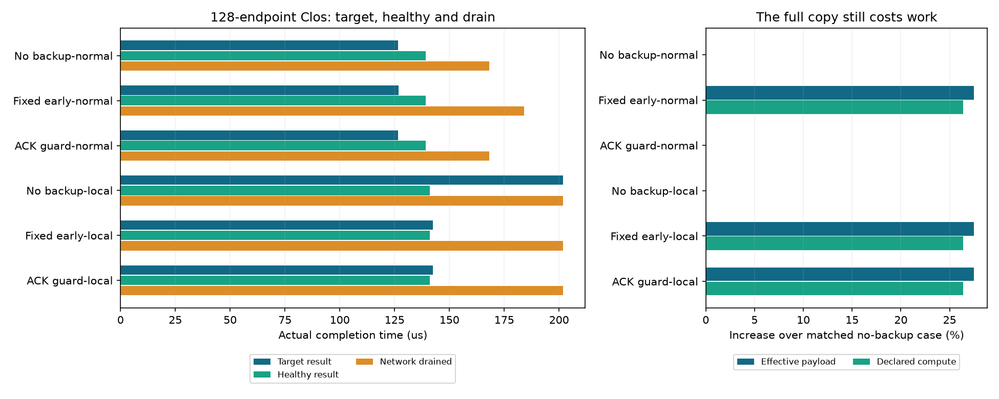
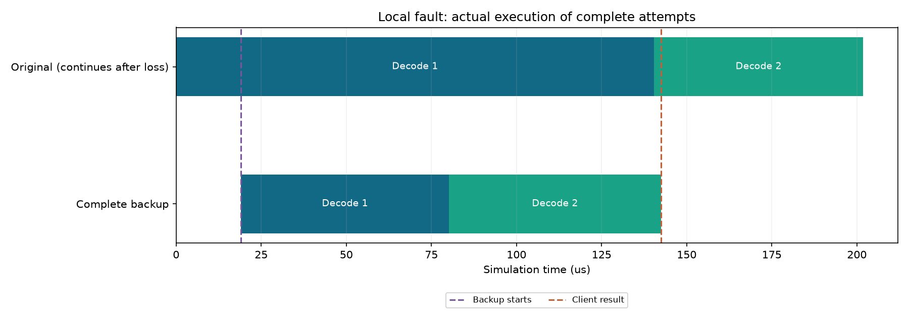

2026-10-30 · 128模拟端点Clos · 15份不同真实专家路由 · 四个新网络，各一次
源确认超时与完整备用：收益来自哪里
当前局部短故障中，目标任务少等59.438微秒（29.44%）。同刻直接启动已有备用机制得到完全相同的故障结果；确认信号的作用是让正常任务避免无效备用。这是成熟机制的可运行基线，尚未证明新的恢复算法。
系统这次实现了什么
前端记录实际SEND提交与源完成回调，使用同一ns-3仿真时钟上的控制定时器检查：已经发送、超过期限、仍未收到源确认，才启动完整两步备用。同时保留127微秒整段兜底。后续步由实际前步完成推进，备用未启动才可跳过；已启动的输家继续通信、确认和释放KV，没有假取消，也没有修改选择性重传。
平台新增显式格式/5、检查记录、预算拒绝和公开准备参数；77项CPU检查、四份旧网络公开只读核验与13项固定依赖检查通过。研究另用独立读取器重建全部原件消息矩阵、计算、依赖、门限、逐包/队列、原生决策及KV。16项原始记录/配置篡改拒绝通过。
任务和故障怎样设置
128端点Clos，16台模拟服务器，8接入/8汇聚/4核心交换机，单rail，各层400Gbps、每链路1微秒。四组EP32，每rank每层8专家。15份不同R1-AWQ/MMLU专家选择原件分为4份目标、11份独立健康输入；E256、Top8、H7168，只取原层3/4和连续两个Decode入口。
normal没有额外故障；local在仿真前20微秒丢弃到GPU28的DATA，控制包保留，随后停止注入。各故障条件实际丢6包，重传43,392字节。两个条件都使用选择性重传和参考DCQCN。
只从原正常目标全部214条消息计算post→源完成的最大跨度17.347微秒，按1微秒向上取整为18微秒；最早post为1.030微秒，直接启动基线固定在19.030微秒。规则在四个新网络前提交，不扫描、不按故障结果调参。
源确认超时只表示“到检查时尚无源完成回调”，不证明数据没到或设备损坏。轮询不保证每条消息精确到期触发。本例3条超时消息的名义期限和实际检查恰好都是19.030微秒，不能推广为零检测延迟。
六种条件的实际结果

确认检查在正常条件下不启动备用：完整包捕获和原始队列记录与原control完全一致。在故障条件下，两种策略同刻启动，完整逐包和队列记录也彼此完全相同。因此故障时的59.438微秒加速来自更早启动；不能把已有超时与备用机制包装成新恢复协议。
相比正常时无条件早启动，确认检查省去3,088,448字节有效通信和31,460纳秒声明计算工作量，避免目标多等0.119微秒、健康多等0.151微秒、网络收尾晚15.860微秒。声明计算是各执行节点工作量之和，不是端到端时延。
收益有多少，剩余空间怎样判断
局部故障原本让目标从126.626变为201.866微秒，增加75.240微秒。早备用收回59.438微秒，相当于本例故障额外等待的79.00%。目标仍比正常参考慢15.802微秒；这是参考差距，不是已证明可消除的优化上限。
故障时全任务有效载荷增加3,088,448字节（27.51%），声明计算增加26.37%。健康任务和全网排空均晚14纳秒。备用KV仍预先保留，初始合计46,792,704字节，不能称正常零内存成本。结果提前交付后，原任务仍执行到201.880微秒，不能把142.428微秒当成集群资源全部释放时间。
29.44%是单个构造故障下目标片段的条件收益，不是平均服务收益、集群吞吐增长或商业收益率。没有生产故障频率和持续到达负载，就不能换算全年收益。下一步应争取在这个成熟基线上减少额外通信/计算，同时保留目标收益；只有超过强基线、接口成立且独立场景可复现，才值得讨论论文创新。
备用为什么这次能追上

上轮127微秒才启动的完整备用追不上原任务；本轮19.030微秒开始，两步备用在142.428微秒交付结果。原任务在201.880微秒结束。这个时间线来自实际提交、确认和图退休，原任务剩余时间仅用于事后解释，没有进入在线策略。
健康任务受到什么影响
健康DATA有4,264次交换机经过，全部可配对。故障条件下累计驻留变化为2,362纳秒，但最终业务只晚14纳秒。逐阶段枚举全部最晚成员和紧约束前驱，并核对实际末DATA及源ACK路径，阶段释放变化如下：
正负变化和并列依赖都保留。后续10/14纳秒的阶段延迟传播到最终健康完成；不能把全部包累计等待当作可回收推理时延。完整节点、消息和包路径见机制JSON与CSV。
适用边界与下一步
专家选择是真实数据，消息由前端投影并在ns-3中模拟；BF16布局、计算时间和现成等价模型/KV副本均为声明。原四份有固定修订，新增十一份只有用户确认目录与本机SHA，远端版本未知。本例不代表完整671B推理、满载128卡、真实GPU测量、持续到达、p99或生产故障分布。
本轮证明平台能够真正执行信号驱动的完整备用，也明确了成熟方法已经覆盖的收益。继续优化前，应先判断更小恢复单位是否有合法的数据消费与一次归并接口，再研究怎样减少重复工作；不得删掉collective必要依赖或弱化选择性重传来制造加速。扩大输入覆盖时仍保持128/256/512范围内的一种Clos规模，当前继续固定128端点。